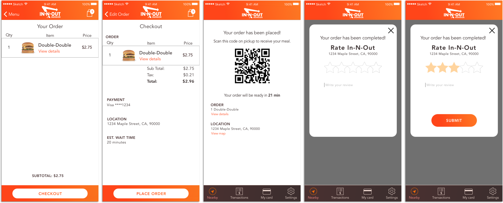
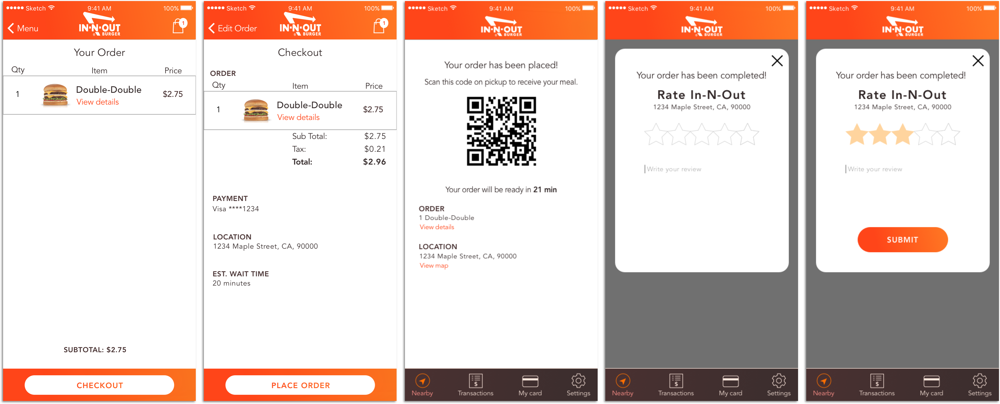

Overview
As easy as it is to buy fast food, there are a lot of frustrations that I’ve experienced with it. Figuring out my order in the drive through can be stressful, sometimes my order gets messed up, and going to a restaurant only to find that the drive through line extends out the parking lot is the worst. I think a lot of these problems could easily be solved with an app, so I designed one.
User Research
What is your biggest challenge with ordering fast food?
This result was much different than my expectation. I thought answers would be varied and if anything more focused on the actual ordering process.
What would make the ordering process easier?
Users who wanted easier communication mentioned communication with server, issues with speakers, and getting other people's orders. Those who said improved menus wanted menus with pictures and simpler menus.
User Stories
Referencing my research, I gathered user stories that would become the core of this app.
As a user, I want to view restaurants near me or a location I input.
As a user, I want to select a restaurant, see details, and view a menu.
As a user, I want to select items and purchase them using my phone.
As a user, I want to customize an item I select to my liking.
As a user, I want to rate and review a restaurant.
As a user, I want to create an account.
As a user, I want to view my transactions.
Wireframes
Taking everything into account, I first designed the navigation to lay down the foundation. The app is separated into Nearby, Transactions, Card, and Settings. Then for each user story, I created wireframes to encompass the core actions associated with it.
User Testing
I created an Invision prototype with the wireframes and tested it with a user. I had the user explore the app and order from a restaurant. On the positive side, the user had no confusion walking through the app and said it was easy to navigate.
However, there were two screens the user was unsure about. The first was editing capablities of a menu item. The user wasn't sure of how to remove the items from the "Includes" section and didn't understand that the "Options" items were check boxes. I redesigned this screen to make it clearer that items in the "Includes" section could be removed. I tested this screen with anoter user and this solution was much easier to understand.
The other screen that had issues was the confirmation screen. This was more of a wording issue and a lack of clarity. The user was unsure of what "estimated wait time" meant and felt that more information should be accessible from this screen.
Mockups
I chose red for the color scheme since it's associated with hunger and I made the navigation dark to contrast with it. I wanted to keep the design simple and only used these colors for accents.
 

Conclusion
This app was successful in it's basic purpose of searching for a restaurant and ordering from a menu. I was really satisified with the user testing and it helped me with designing unique features. I've learned that while referencing other designs can be helpful, the best is taking from how users interact with your product. While I think this app works well as an MVP, if I had more time I would definitely want to add social capabilities. If users could collaborate on orders, this would further diminish the chances of external errors in ordering.